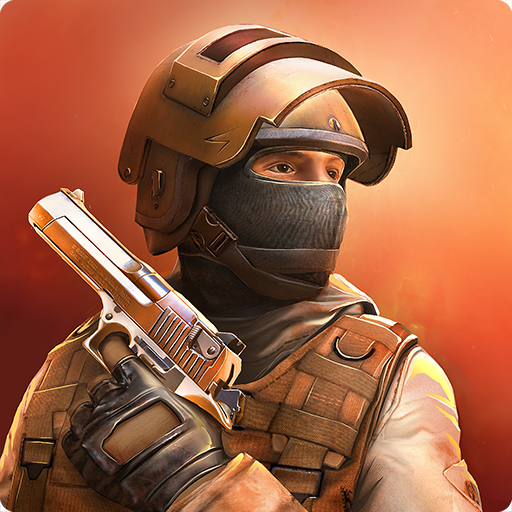

Мои любимые игры
Сылка
Сылка
Сылка
Привет я не только люблю спорт но ещё люблю заниматся гипер спортом.Играть в игры просто классна,прикольно ну и нравится.Но тема сегодня не совсем об этом,тема этого текста "Мои любимые игры".Мои любимые игры это PUBG-MOBILE,Standof ,Brawl Stars,Fortnait.
Игры для меня многое значит.Мне кажится что я смогу мало минусов найти в тех играх которые я играю.Не зря я в них играю.Но настроение может испортится из за читеров-это взломщики игры которые взламывают игрю кодами нужно быть професионалом чтоб взломать популярные игры.Но всё таки встречаются читеры из за того что некотырые люди как взломают игру потом говорят способы как это сделать или даже приходится загружать их.Это называется Пиратство.Ну ладно небудем медлить погнали!
